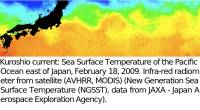
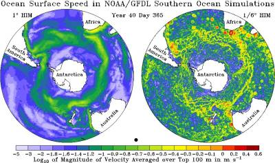
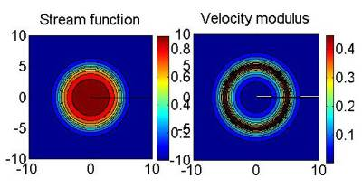

ANR STATOCEAN¶
Numerical Computation of Large Deviations and out-of-equilibrium Statistical Mechanics of Turbulent Flows
{kind=link}
Out of equilibrium statistical mechanics of geophysical flows and applications to the Kuroshio current (east of Japan) and to the Zapiola anticyclone (east of Argentina)
Directed by: Freddy BOUCHET, ENS-Lyon and CNRS
Contact : Freddy.Bouchet @ ens-lyon.fr
Funded by ANR-STATOCEAN
Members of the group :
Freddy Bouchet, Laboratoire de Physique, Ecole Normale Supérieure de Lyon (ENS-Lyon)
Eric Simonnet, Institut Non Linéaire de Nice Sophia-Antipolis (Valbonne)
Marianne Corvellec, Institut Non Linéaire de Nice Sophia-Antipolis (Valbonne)
Joël Sommeria, LEGI - Plaque Coriolis (Grenoble)
Julien Le Sommer, LEGI - Plaque Coriolis (Grenoble)
Antoine Venaille, LEGI - Plaque Coriolis (Grenoble)
Xavier Carton, LPO: Laboratoire de Physique des Océans (Brest)
Statistical mechanics¶
This project aims at applying and developing tools of statistical physics for the study of the statistics of the large scales of geophysical flows. Even if they are out of equilibrium, we will consider in a first part the interest of the equilibrium Robert-Sommeria-Miller theory, in order to explain partly the self-organization of these flows. This equilibrium approach is an essential first step but is necessarily limited. It will be complemented by the development and the use in this context of the most modern tools of out of equilibrium statistical physics ; for instance the large deviation theory applied to dynamical quantities or on a longer term the history thermodynamics (Ruelle formalism, initially developed for deterministic systems, but now generalized to stochastic processes).
The Kuroshio current and the Zapiola anticyclone¶
We will study several important phenomena for the large scale dynamics of oceans ; on one hand the bistability of some of the western boundary currents like the Gulf Stream, but especially of the Kuroshio current (east of Japan), and on the other hand the self-organized Zapiola ocean anticyclone, east of Argentina. Our choice of these examples has been dictated by their importance for ocean circulation, but also for their paradigmatic interest as far as statistical mechanics is concerned. Indeed, the Kuroshio exhibits a bistability that we will explain by the vicinity of an out of equilibrium phase transition. The Zapiola is one of the clearest examples of self organization close to some equilibrium states, even out of equilibrium. Then these two problems will be essential for illustrating the relevance of statistical mechanics tools for ocean dynamics but also for other types of geophysical fluid dynamics problems.
[From Hallberg-Gnanadesikan - JPO 2006.] A large part of ocean mesoscale variability is explained by vortices (rings) of size 100 - 200 km. These rings are present everywhere in the ocean. There are for instance visible here south of South Africa and all along the Antarctic circumpolar current.
Streamfunction and velocity statistical equilibria, explaining the structure and drift velocity of ocean rings.
Aims in terms of statistical physics¶
Theoretical ideas explaining and predicting in details, the self-organization of these flows, independently of the dynamical complexity,
New tools (large deviations) allowing to precisely characterize the statistics of the largest scales of these flows,
The design of models with a lower complexity, reproducing reasonably well the large scales dynamics and statistics and usable in climate problems (which is not the case currently).
Aims in terms of geophysical fluid dynamics¶
Reproduce current bistability in simple situations in laboratory experiments
Make numerical simulations of the Kuroshio bistability in simple models
Determine the dynamical mechanics of the Kuroshio bistability
Our approach is thus complementary and not opposed to the more traditional fluid dynamics and nonlinear dynamics developed earlier by oceanographers. A non negligible part of the project is experimental. It aims at reproducing in the lab the type of bistability that characterizes the Kuroshio current, thanks to indications that will be provided by statistical mechanics.
CBP contribution to the project¶
CBP hosted STATOCEAN members for two years and provided a very pleasant and friendly framework. CBP also allowed very interesting discussions concerning tools and numerical methods.
CBP also provided the administrative and logistical support for scientific meetings and for the specific workshop: “Computation of transition trajectories and rare events in non-equilibrium systems - Applications in Turbulence, Chemistry, (Bio)Physics”.